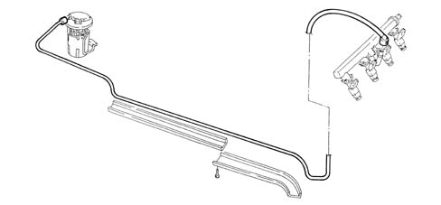

1040B fuel supply/return circuit pipe
- Path
- Descriptions > 10 ENGINE > 1040 FUEL TANK AND PIPES > 1040B fuel supply/return circuit pipe
- Kind
- system description
- Applies to
- engines: 1.6 TS, 2.0 TS; all production periods
- Interactive page
- https://sloeber94.github.io/elrnDB-a147/en/#/3022415
Applies to: engines: 1.6 TS; all production periods
OPERATION
The pipe connecting the fuel tank to the engine is made from plastic. The pipe is protected by special outer casings where it bends.

Applies to: engines: 2.0 TS; all production periods
OPERATION
The pipe connecting the fuel tank to the engine is made from plastic. It is protected by special outer casings where it bends.